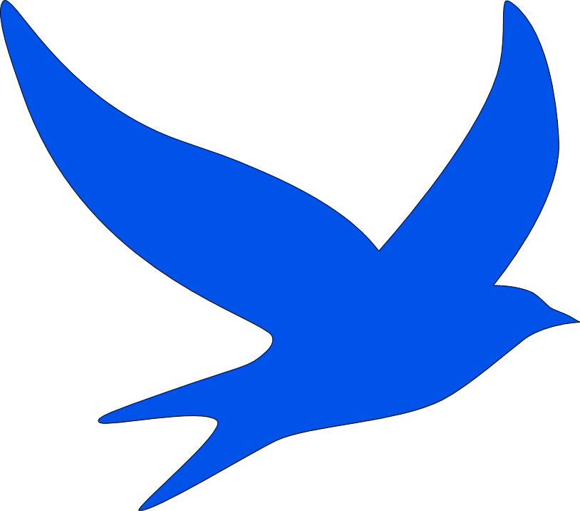

TRAVSEEKER / EXPLORAR Y PLANIFICAR

Travseeker
Descubrir un destino. Dar forma al viaje.
Plataforma web para explorar destinos turísticos en España y organizar itinerarios. Desarrollo la interfaz con React y TypeScript y una API REST con Node.js, Express, Prisma y PostgreSQL.
- Búsqueda, filtros y mapas interactivos.
- Diseño responsive y pruebas automatizadas para frontend y backend.